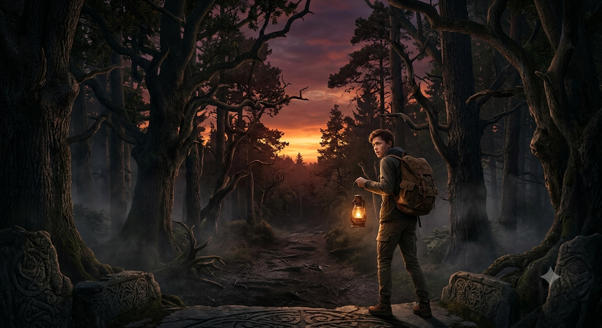
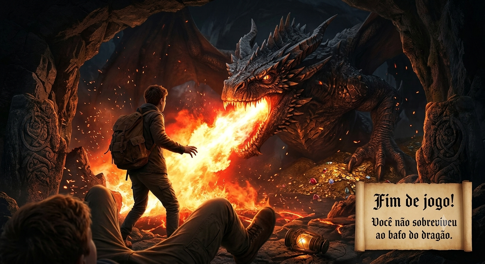

Sua jornada começa nos limites da Floresta dos Sussurros. O painel de missões da guilda diz que o Amuleto de Sangue do antigo rei está escondido no coração da mata, mas as árvores parecem se mover sozinhas e o sol está prestes a se pôr.
O brilho da tocha espanta os Goblins que espreitavam nos arbustos. Mais adiante, seu grupo encontra um dilema de exploração: uma ponte de cordas apodrecida balançando sobre o abismo, ou a entrada de uma masmorra subterrânea que desce para a escuridão.
Lá de cima, sua rolagem de Percepção é um sucesso! Você avista uma aura mágica azul no centro da floresta. Porém, ao tentar descer, a terra cede. Você cai direto no ninho de Ursos-Coruja adormecidos. Qualquer ruído iniciará um combate mortal, mas a saída está logo atrás das feras.
No meio da ponte, um NPC Alquimista bloqueia o caminho. Ele oferece um item de missão: uma Poção de Resistência a Arcano. O velho avisa que a névoa à frente drena os pontos de vida (HP) de quem não estiver protegido.

Você invadiu o covil de um Dragão Vermelho Ancião. Sem buffs ou armadura de resistência a fogo, o sopro de chamas da criatura reduz seu HP a zero instantaneamente. Fim de Jogo! (Sua ficha foi destruída).
Sua rolagem de Furtividade foi um Sucesso Crítico! Ao sair do ninho, você encontra um Santuário Abandonado. No altar, há um pergaminho de lore que revela a próxima missão principal nas Ruínas Ancestrais.
Falha no teste! Os monstros acordam enfurecidos e iniciam uma perseguição. Tentando despistá-los com manobras evasivas pelas árvores, você entra em um cânion sem saída. O bando cercou você!
Ao adentrar as Ruínas Ancestrais, o medidor de mana do ambiente dispara. Avançando por um labirinto de masmorra, seu mapa indica que a rota se divide nas margens de um rio subterrâneo.
Usando táticas de recuo, você despista os monstros e encontra o Santuário com o mapa antigo. Agora você tem as coordenadas exatas da masmorra!
O túnel da esquerda esconde uma Gruta Secreta atrás de uma cortina de água. As paredes revelam runas antigas que funcionam como a chave para abrir os portões do Templo Perdido.
O túnel da direita leva a uma zona de Pântano Venenoso coberta por névoa. Embora haja itens de criação (plantas mágicas) no chão, não há nenhuma entrada de dungeon por aqui.

No altar central da Shaman, o lendário Amuleto de Sangue flutua em um feixe de luz! Você recupera o artefato lendário, completa a Quest Principal e ganha 99.999 XP. Vitória! O reino está salvo!
Retornando ao cruzamento e escolhendo o túnel da esquerda, você finalmente alcança a Gruta Secreta e decifra as runas mágicas que destrancam os portões de pedra.